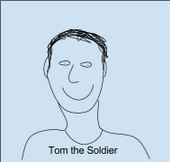
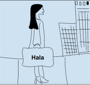
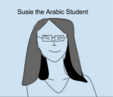

Learning Arabic Language
A site for all of your arabic language learning needs.
This site has been created from personal experience and knowledge but will benefit other Arabic students in their quest to conquer the language. There are many sites with Arabic information on them but this site will include multiple pages with information that I feel is essential to the serious Arabic student. The information on this blog will include a section for culture, arabic learning tips, standard arabic, shaami dialect, moroccan dialect, and outside resources. This website will be useful because most culture and language websites are separate and it is also hard to find websites that feature multiple dialects.
Personas
Tom the Soldier
Jim joined the military after graduating high school and just recently find out he is going to be stationed in Iraq. He has been learning Modern Standard Arabic for the past 6 months but he knows that he will not understand the Iraqi dialect and is looking for other learning sources to learn more about the Iraqi dialect and culture. He is hoping to find someone he can practice speaking with.
Hala the Heritage Speaker
Hala is a Senior at Wayne State University from the city of Dearborn, her family is Palestinian and she only speaks the language with her grandparents. She is majoring in Medicine but very passionate about the refugees in Syria and would like to know more about her family’s history and language.
Susie the Student
Susie is a Junior at Wayne State University and majors in Arabic and Computer Science. She plans to study abroad to Morocco this Summer and wants to be fully integrated into the culture. She is an advanced Arabic Speaker but struggles with the dialect and cultural phrases. She listens to the news in Arabic every morning but would like to start listening to Arabic tv shows. She vaguely understands the Arabic culture but knows nothing about Morocco, specifically.
Quote:
- “”Kul shi mzian, la bas?’ That’s how you say ‘hi, how are you’ in Moroccan dialect right?”
- “Wait, how do I spell ‘mzian’ in transliteration? Like that or like ‘mzyan’ or ‘imziiayn’?”
Who is it?
- 20 years old
- Royal Oak, Michigan
- Student
- Frequently reads blogs and uploads photography to her own flickr account. Loves tumblr and reblogging new information and has become quite famous for her creative traveling photos on Instagram. She isn’t a gamer, unless MarioKart counts, and has tried to create a few games for her classes, but doesn’t really know what kind of games to create. Wants to work for the State Department after she graduates and possibly open a non-profit abroad.
Goals
She wants to get to a level 3 on the ILR system before she leaves Morocco and wants to learn some tips from other students who have reached that level of proficiency. She wants to become fluent in Standard Arabic as well as two other dialects and then obtain a job at the State Department where she can continue traveling the world.
Attitude
Susie is very busy with her classes and wants to find useful information quickly, she doesn’t have time to look through multiple sites in order to find the best one to learn Arabic from.
Behavior
Susie listens to the news in Arabic online but has trouble finding and organizing information from other websites about the arabic language and culture. She bookmarked about a hundred Arabic learning pages only to find that the language is a little different on each one and that a lot of the phrases are the same. She can’t seem to find Islamic greetings and departures and still can’t find the format for writing an email in Arabic, which is pretty frustrating.
Comps
Desert Sky
http://arabic.desert-sky.net/index.html
Desert Sky may be the biggest comp and most useful Arabic website
Pros
- Heavy grammar section with very detailed examples and helpful explanations
- Organized Cleanly
- Organized by category
- Easy to navigate
Cons
- There is no dialect, audio, video, or culture included (very important to the language)
The Arabic Student
http://www.thearabicstudent.com/
Pros
- Blog from student’s perspective
- Uses videos that are culturally relevant and popular!! (TV shows, music videos, Vines..)
- Arabic script and translation for dialect
Cons
- Ugly Design
Arabic Speak 7
http://arabic.speak7.com/arabic_vocabulary_animals.htm
Pros
- They have a section for Islamic phrases (so hard to find and important)
- Section for careers in Arabic (motivation of learning language)
- Business in Arabic language - (email, how to address people)
- English, text, and transliteration
Cons
- Large and distracting (doesn’t fit design) advertisement at the very top.